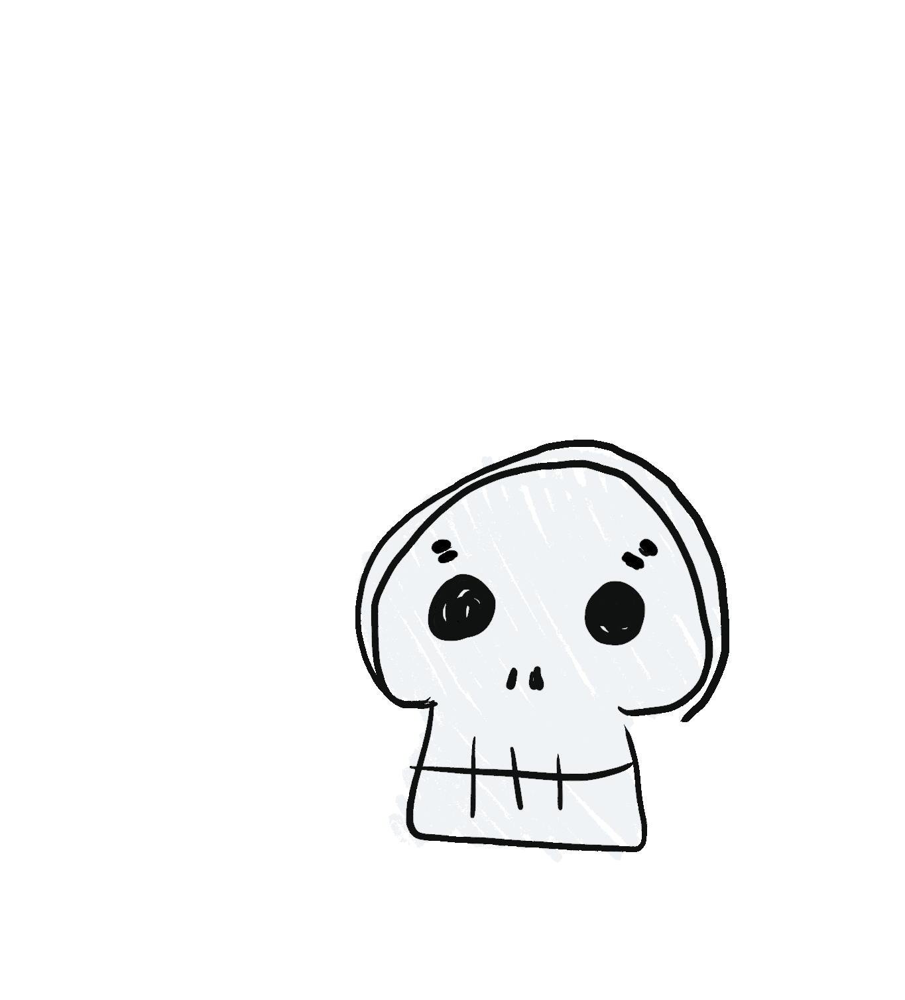

Welcome!
| Sami's Spooks is a website where I (Sami) will be recommending some spooky movies. I hope you are able to find a good creepy movie to make you feel like someone is watching you when you're alone, especially if you're brave enough to watch any of them alone. I'm no expert of a movie reviewer, but I do think as someone who constantly watches horror movies that I can supply some unique choices you might have never heard of before and that's what I hope to achieve with this website. |  |